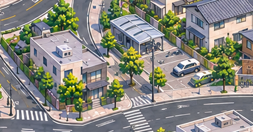

004＋005：沿完整可见楼体绕切的拼接候选
004与005单图美术已获认可。本候选为3192×941原像素组合，保留各自楼路比例和镜头；不是新生成的整张美术图。
本页是两区拼接候选，尚未获拼接画面验收。第五共享结构围合仍含禁导航的屋顶遮挡推定；部分路线只用于独立地图验证。街道全清单、交通规则、米制覆盖与整城验收未完成。
三段接缝原像素局部
北段楼群与斜路中段商住楼、棚顶和主路
南段公寓与前景遮挡
九组可见建筑分别记录来源。南框和北框原有截断保持；未补绘框外或遮挡后部，不能称所有建筑完整入框。检查取样点只用于来源校验，完整对象判断依靠原生实看。
两个原文件均保留。边界只决定选择哪张图的原像素，没有缩放、滤色或混色。SVG裁界用于编辑，PNG与Tiled使用二值蒙版；SVG本身显示边缘可能抗锯齿。拼接画面、道路导航和正式游戏验收分别记录。